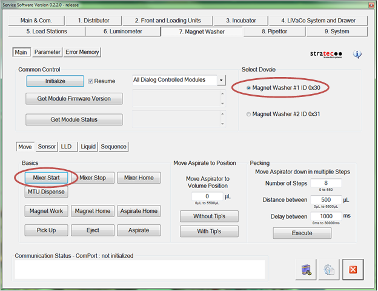
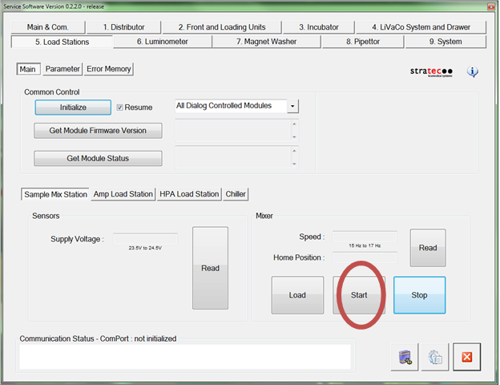
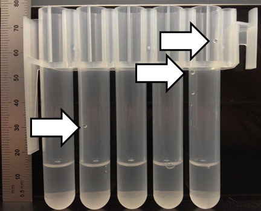
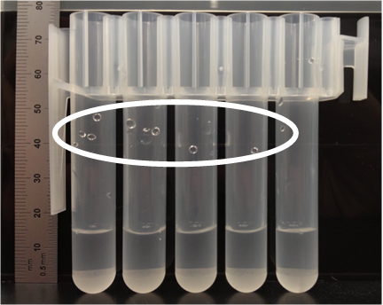
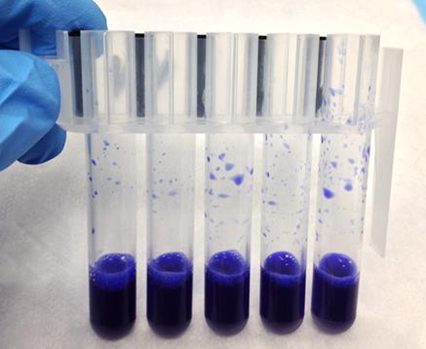

Identifying Loose MagWash and Load Station MTUs
Purpose
Instructions to identify plastic MTU Multi-tube unit—Container used to process tests in the instrument. An MTU contains five separate reaction tubes. The MTU is moved through the instrument by the linear distributor and includes five tiplets for pipettiing to be used in the mag wash station. carriers that carry MTUs too loosely.
Multi-tube unit—Container used to process tests in the instrument. An MTU contains five separate reaction tubes. The MTU is moved through the instrument by the linear distributor and includes five tiplets for pipettiing to be used in the mag wash station. carriers that carry MTUs too loosely.
To replace a plastic MTU carrier refer to Replace Plastic MTU Carriers.
Implementation
- Check and replace loose MTU carriers on all MagWash and Load Station Modules on Panther Systems below Serial # 00431.
- Replace any MTU carrier that forms droplets on the side wall of the MTU tube.
Parts and Materials Required
- Proper PPE
- Manual pipetter (1,000 µL/1 mL) and pipette tips
- (Optional) water-based dye or food-coloring (source locally)
Time Required
- 45 minutes
Procedure
- Put on proper PPE.
- Exit the Panther Main software.
- Cycle Panther System power off and on.
- Open Service Software.
- Initialize the Distributor.
- Initialize both MagWashes.
- Initialize 3 Load Stations. (The Sample Mix Station is treated as a Load Station.)
- With a new MTU, remove and dispose of the tiplets from the MTU.
- Avoiding the walls of the MTU tubes, with a manual pipettor, dispense 1 mL of DI water into all 5 MTU tubes.
- Dispense fluid directly in the bottom of the tube.
 (Optional) Add a small amount of dye to the DI water to aid visual inspection.
(Optional) Add a small amount of dye to the DI water to aid visual inspection.
- Place the MTU into the Service Queue on the left side of the system.
- Direct the Distributor to pick the MTU from the Service Queue and place it into one of the MagWash Stations or Load Stations.
- If the MTU is placed into a Magnetic Wash station:
- In Service Software, select Magnet Washer 1 or 2, depending upon which station is being tested.
- Press Mixer Start to start mixing of the MTU carrier.

- If the MTU is placed into a Load station:
- in Service Software, select the appropriate Load Station (Sample Mix Station, AMP, or HPA Hybridization protection assay—The Hologic HPA technique uses a specific DNA probe, labeled with an acridinium ester detector molecule that emits a chemiluminescent signal.).
- Press Start to start mixing of the MTU carrier.

- Allow the MTU to mix for 30 seconds.
- Press Mixer Stop or Stop.
- Direct the Distributor to return the MTU from the MagWash or Load Station back to the Service Queue.
- Carefully remove and inspect the MTU from the Service Queue.
- Look for any drops of fluid on the inner sides of the MTU tubes.



- If the droplet formation pattern on the MTU indicates a loosely retained MTU,
- Check that the issue is not the pick/place of the MTU with the Distributor.
- Repeat Steps 7–17 but DO NOT MIX the fluid in the MagWash stations or Load Stations.
- If droplet formation is still present the issue is with the Distributor, not the MagWash or Load Station.
- Check the teaching of the Distributor to the MagWashes and Load Stations and the Service Queue.
- Repeat Steps 7–17 for the remaining Magnetic Wash and Load stations.
- If loose MTU retention has been identified replace the MTU carrier(s) referring to Replace Plastic MTU Carriers.
 button at the top of the page to send feedback, comments, or change requests.
button at the top of the page to send feedback, comments, or change requests.